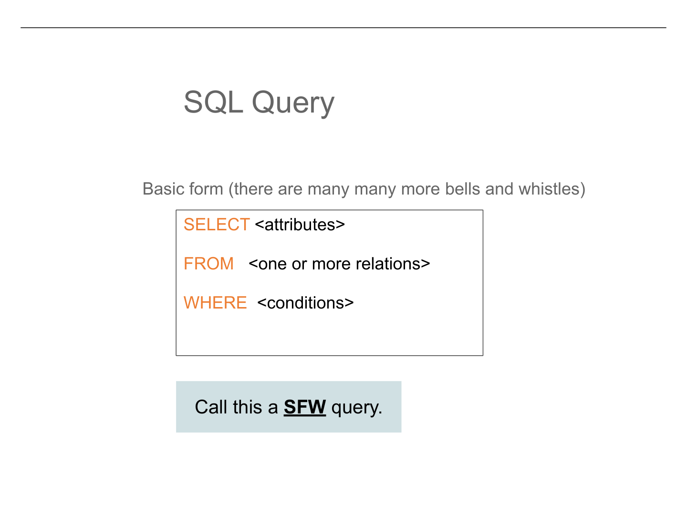
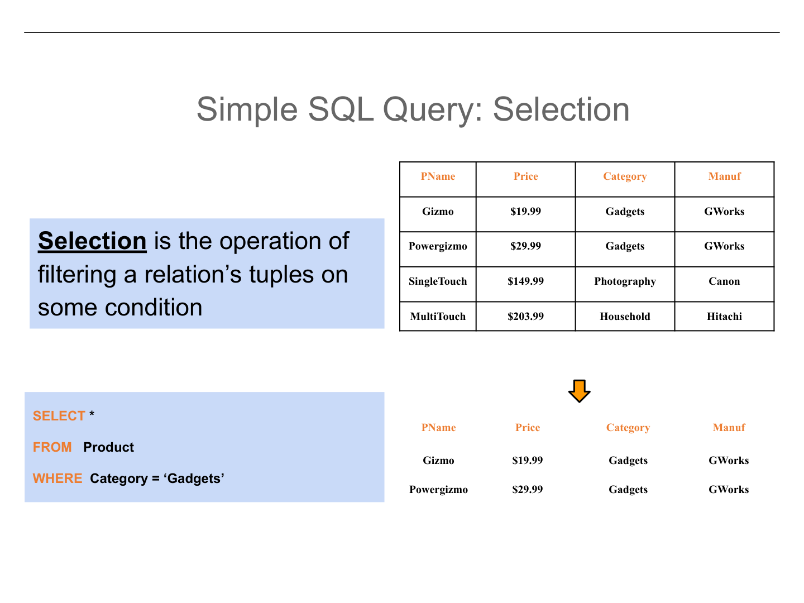
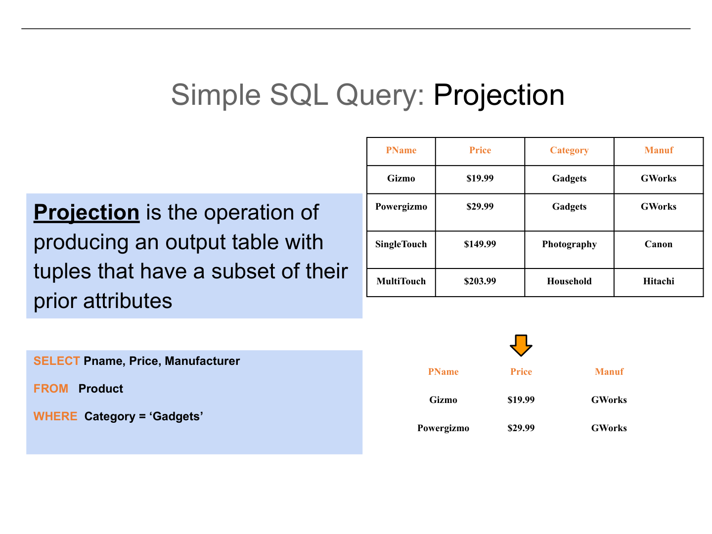
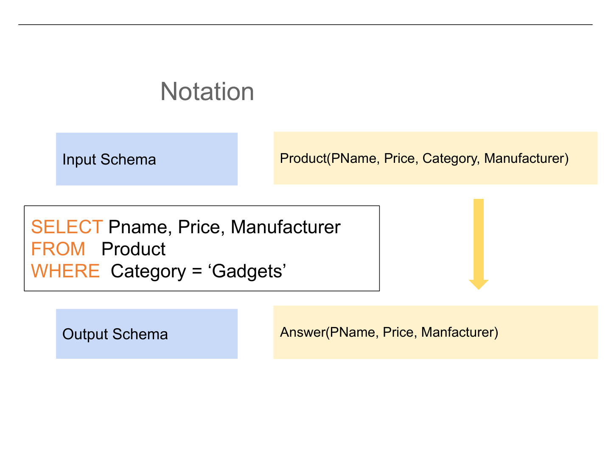
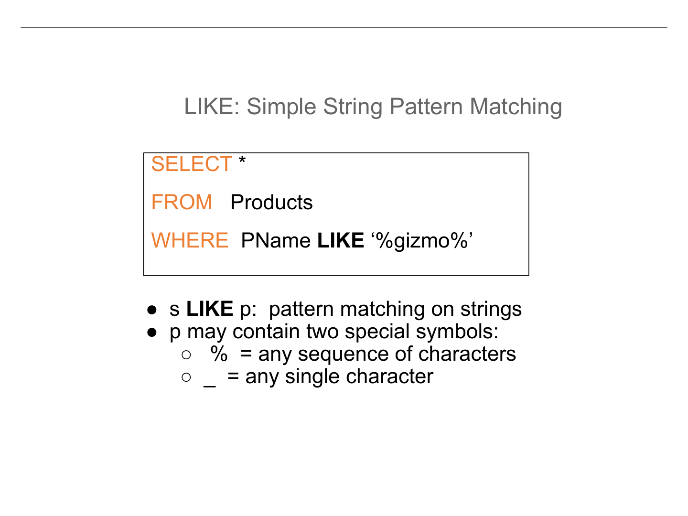
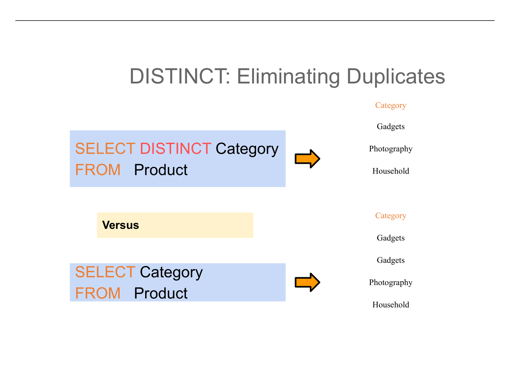
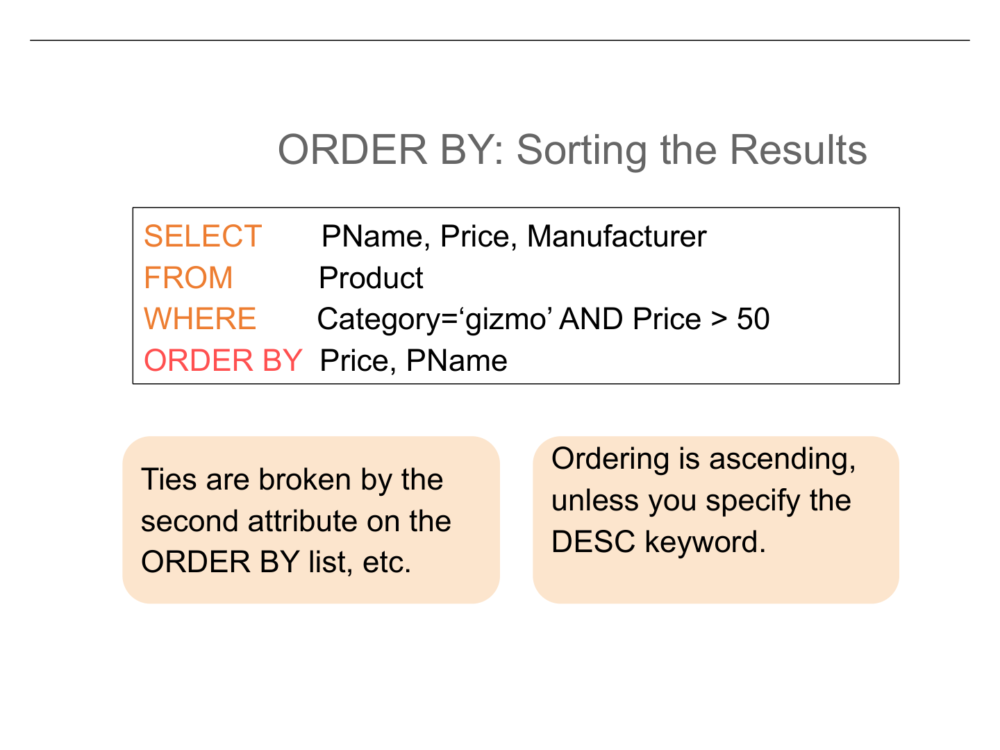
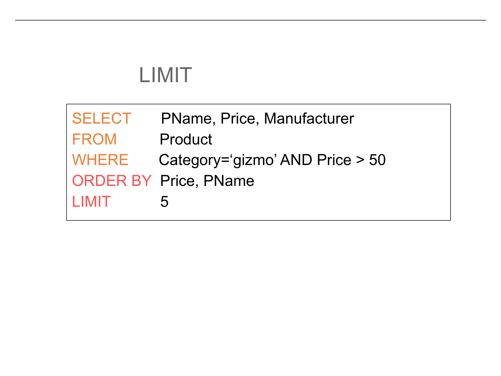

Lecture 3, Part 2 — The SFW Query and Its Building Blocks
Every language has a basic sentence structure. In English, it is subject-verb-object: "The dog chased the ball." SQL has its own fundamental sentence structure, and it is called the SFW query — short for SELECT-FROM-WHERE. Nearly every question you will ever ask of a database can be expressed in this three-clause form, and mastering it is the single most important step in learning SQL.

SELECT — which columns (attributes) to include in the outputFROM — which table(s) to draw data fromWHERE — which rows (tuples) to keep, based on a Boolean condition
Think of it this way. The FROM clause tells the database where to look —
it identifies the filing cabinet. The WHERE clause tells the database what to
keep — it filters the files inside that cabinet. And the SELECT clause
tells the database what information to copy from the files you kept — maybe you only
need the name and phone number, not the entire dossier.
Throughout this section, we will work with a single example table called Product. This table has four attributes and four rows:
| PName | Price | Category | Manufacturer |
|---|---|---|---|
| Gizmo | $19.99 | Gadgets | GWorks |
| Powergizmo | $29.99 | Gadgets | GWorks |
| SingleTouch | $149.99 | Photography | Canon |
| MultiTouch | $203.99 | Household | Hitachi |
This small table is enough to illustrate every concept in this lecture. As we work through selection, projection, pattern matching, duplicate elimination, sorting, and limiting results, keep this table in mind — trace each query by hand before reading the answer.
The first fundamental operation is selection, which filters the rows of a
table according to some condition. In SQL, selection is expressed through the
WHERE clause. Despite its name, selection has nothing to do with the
SELECT keyword — a notoriously confusing naming choice inherited from
relational algebra. Selection answers the question: which rows do I care about?

When you write SELECT * FROM Product WHERE Category = 'Gadgets', the
database engine conceptually examines every row in the Product table, one at a time.
For each row, it evaluates the condition Category = 'Gadgets'. If the
condition is true, the row is included in the result. If false, the row is discarded.
The asterisk (*) means "all columns" — give me every attribute for
the rows that pass the filter. The result of this query is:
| PName | Price | Category | Manufacturer |
|---|---|---|---|
| Gizmo | $19.99 | Gadgets | GWorks |
| Powergizmo | $29.99 | Gadgets | GWorks |
Two rows survive the filter because they have Category = 'Gadgets'.
The Photography and Household rows are silently dropped. Notice that the output is itself
a table — a relation in, a relation out. This property is called closure,
and it is what allows us to compose queries on top of each other.
SELECT *, every column from the original table shows up, just with
fewer rows.
If selection filters rows, projection filters columns. Projection is what
happens when you replace the * in the SELECT clause with a
specific list of attribute names. You are "projecting" the data onto a smaller set of
dimensions — like casting a shadow of a 3D object onto a 2D wall. Some information
is deliberately thrown away because you do not need it.

Most real queries use both selection and projection together. Consider this query:
SELECT PName, Price, Manufacturer FROM Product WHERE Category = 'Gadgets'
Here, the WHERE clause performs selection (keeping only Gadgets rows),
and the SELECT clause performs projection (dropping the Category column
from the output). The result is a narrower, shorter table:
| PName | Price | Manufacturer |
|---|---|---|
| Gizmo | $19.99 | GWorks |
| Powergizmo | $29.99 | GWorks |
Notice that the Category column is gone from the result. We filtered on it, but we did not
ask for it in the output. This is perfectly legal and extremely common — you can
reference any column of the FROM table in the WHERE clause,
regardless of whether it appears in the SELECT clause.
When documenting or reasoning about SQL queries, it is helpful to use a concise notation that captures three things: what goes in, what the query does, and what comes out. The standard notation is:

Product(PName, Price, Category, Manufacturer) → query →
Answer(PName, Price, Manufacturer)
This notation makes something important visible: the output of a query is itself a relation
with a well-defined schema. The input relation Product has four attributes; the output
relation Answer has three. The Category attribute was consumed by the WHERE
clause but excluded from the output by the SELECT clause. Writing down input
and output schemas before you write a query is an excellent habit — it forces you
to think clearly about what your query should produce.
Before we go further, there are a few syntactic details that trip up nearly every beginner. These are small things, but getting them wrong will produce cryptic errors or, worse, silently wrong results.
SQL keywords and table/column names are case insensitive.
SELECT, Select, and select are all
identical. Product and product refer to the same table.
String constants inside quotes are case sensitive.
'Seattle' and 'seattle' are
different values. A WHERE clause looking for one
will not match the other.
In SQL, string constants must be enclosed in single quotes:
'abc'. Double quotes "abc" have a different meaning in SQL
— they are used for identifiers (table or column names with special characters
or reserved words). Writing WHERE Category = "Gadgets" may produce an
error or be interpreted as a column reference rather than a string value. Always use
single quotes for data values.
These rules may seem arbitrary, but they follow a logical pattern: the structure of a query (keywords, table names, column names) is case insensitive because the database designer controls those names and consistency is preferred. The data inside the database is case sensitive because it represents real-world information where "Smith" and "smith" might genuinely be different.
Sometimes you do not know the exact value you are looking for. Perhaps you want all products
whose name contains the word "gizmo" somewhere, or all cities that start with "San". The
LIKE operator lets you match string patterns using two special wildcard characters.

% — matches any sequence of zero or more characters.
It is the SQL equivalent of the * wildcard you may know from file systems._ — matches exactly one character. It is the SQL
equivalent of the ? wildcard in file systems.
Consider the query: SELECT * FROM Product WHERE PName LIKE '%gizmo%'
The pattern '%gizmo%' means: any characters, followed by "gizmo", followed
by any characters. This would match "Gizmo" and "Powergizmo" — but only if
the database performs case-insensitive matching. Remember, string values are case sensitive
in SQL by default. Whether LIKE is case sensitive depends on the database system
and its collation settings. In many systems, you would need LOWER(PName) LIKE '%gizmo%'
or use ILIKE (in PostgreSQL) to guarantee case-insensitive matching.
Other useful patterns: 'S%' matches strings starting with S.
'%touch' matches strings ending with "touch".
'_izmo' matches any five-character string ending in "izmo" (like "Gizmo").
% as saying "I don't care what goes here, any amount of text is fine"
and _ as saying "there must be exactly one character here, but I don't care
which one." Together, they let you express fuzzy searches that would otherwise require
examining every row by hand.
SQL, unlike relational algebra, allows duplicate rows in query results by default. This is
a deliberate design decision — removing duplicates requires sorting or hashing the
entire result set, which can be expensive. But sometimes duplicates are misleading or
unwanted, and that is where DISTINCT comes in.

Consider the query: SELECT Category FROM Product
This returns all four Category values, one for each row in Product: Gadgets, Gadgets, Photography, Household. The value "Gadgets" appears twice because two products belong to that category. If you want to know how many unique categories exist, this result is misleading.
Now consider: SELECT DISTINCT Category FROM Product
Result has 4 rows:
Gadgets
Gadgets
Photography
Household
Duplicates are preserved — one row per input tuple, regardless of whether the output values repeat.
Result has 3 rows:
Gadgets
Photography
Household
Duplicates are removed — each unique combination of output values appears exactly once.
A subtle but important point: DISTINCT operates on entire rows of
the output, not on individual columns. If you write
SELECT DISTINCT Category, Manufacturer FROM Product, a row is considered a
duplicate only if both Category and Manufacturer match another row. Two rows
with the same Category but different Manufacturers are considered distinct.
Relations in the mathematical sense have no inherent order — a set of tuples is a
set, and sets are unordered. In practice, however, humans reading query results almost
always want them sorted in some meaningful way: alphabetically by name, chronologically
by date, or from cheapest to most expensive. The ORDER BY clause provides
this control.

WHERE clause (or after
FROM if there is no WHERE), ORDER BY specifies
one or more columns to sort by. Results are sorted in ascending order
by default. Use the DESC keyword after a column name to sort in descending
order.
Consider: SELECT * FROM Product ORDER BY Price, PName
This sorts primarily by Price (ascending — cheapest first). When two products have the same price (a tie), the tie is broken by sorting on PName alphabetically. The second sort column only matters when the first column has duplicate values.
You can mix directions: ORDER BY Price DESC, PName ASC sorts by price
from most expensive to cheapest, and breaks ties alphabetically by product name. The
ASC keyword is optional since ascending is the default, but including it
makes your intent explicit and your code easier to read.
Without an ORDER BY clause, SQL makes no guarantee
about the order of results. Even if the results happen to come back in insertion order
today, they might come back in a completely different order tomorrow after the database
reorganizes its storage or uses a different query plan. If you need a specific order,
you must include ORDER BY. Never rely on the "natural" order
of a table.
Sometimes you do not need the entire result set. Maybe you want the five cheapest products,
the ten most recent orders, or just a quick peek at what a table looks like. The
LIMIT clause truncates the output to a fixed number of rows.

LIMIT n returns at most n rows from
the result. It is placed at the very end of the query, after ORDER BY if
present. If the result has fewer than n rows, all rows are returned.
LIMIT is most useful when combined with ORDER BY. Without
an ordering, LIMIT 5 returns an arbitrary five rows — which five
you get is unpredictable. But with an ordering, you get precise, meaningful results:
SELECT * FROM Product ORDER BY Price ASC LIMIT 2
— gives you the two cheapest products.
SELECT * FROM Product ORDER BY Price DESC LIMIT 1
— gives you the single most expensive product.
The LIMIT clause is also invaluable during development and debugging. When
you are exploring a table with millions of rows, running SELECT * FROM BigTable
would flood your screen and take a long time. Adding LIMIT 10 lets you quickly
see the table's structure and a sample of its data without waiting for millions of rows to
stream across the network.
Let us now see how all these clauses combine in a single query. Consider this question: "What are the names of the two cheapest products in the Gadgets category?"
We need data from the Product table.
We only want products where Category = 'Gadgets'. This is selection.
The question asks only for names, so we project onto PName.
"Cheapest" means sorted by Price ASC.
We want only the top two, so LIMIT 2.
The complete query:
SELECT PName FROM Product WHERE Category = 'Gadgets' ORDER BY Price ASC LIMIT 2
The result is a single-column table with two rows: Gizmo ($19.99) and Powergizmo ($29.99). Notice how each clause played a specific role, and the clauses were written in the standard SQL order: SELECT, FROM, WHERE, ORDER BY, LIMIT.
% (any sequence) and _ (one character).DESC for descending. Multiple columns break ties.